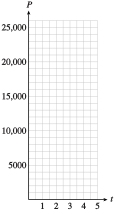
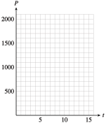

Investigation 4.1 Population Growth
-
In a laboratory experiment, researchers establish a colony of \(100\) bacteria and monitor its growth. The colony triples in population every day.
Fill in the table showing the population P(t) of bacteria t days later.
Plot the data points from the table and connect them with a smooth curve.
Write a function that gives the population of the colony at any time \(t\text{,}\) in days. Hint: Express the values you calculated in part (1) using powers of \(3\text{.}\) Do you see a connection between the value of \(t\) and the exponent on \(3\text{?}\)
Graph your function from part (3) using a calculator. (Use the table to choose an appropriate domain and range.) The graph should resemble your hand-drawn graph from part (2).
Evaluate your function to find the number of bacteria present after \(8\) days. How many bacteria are present after \(36\) hours?
\(t\) \(P(t)\) \(0\) \(100\) \(P(0)=100\) \(1\) \(\) \(P(1)=100\cdot 3=\) \(2\) \(\) \(P(2)=[100\cdot 3]\cdot 3=\) \(3\) \(\) \(P(3)=\) \(4\) \(\) \(P(4)=\) \(5\) \(\) \(P(5)=\) -
Under ideal conditions, the number of rabbits in a certain area can double every \(3\) months. A rancher estimates that \(60\) rabbits live on his land.
Fill in the table showing the population \(P(t)\) of rabbits \(t\) months later.
Plot the data points and connect them with a smooth curve.
Write a function that gives the population of rabbits at any time \(t\text{,}\) in months. Hint: Express the values you calculated in part (1) using powers of \(2\text{.}\) Note that the population of rabbits is multiplied by \(2\) every \(3\) months. If you know the value of \(t\text{,}\) how do you find the corresponding exponent in \(P(t)\text{?}\)
Graph your function from part (3) using a calculator. (Use the table to choose an appropriate domain and range.) The graph should resemble your hand-drawn graph from part (2).
Evaluate your function to find the number of rabbits present after \(2\) years. How many rabbits are present after \(8\) months?
\(t\) \(P(t)\) \(0\) \(60\) \(P(0)=60\) \(3\) \(\) \(P(3)=60\cdot 2=\) \(6\) \(\) \(P(6)=[60\cdot 3]\cdot 2=\) \(9\) \(\) \(P(9)=\) \(12\) \(\) \(P(12)=\) \(15\) \(\) \(P(15)=\)